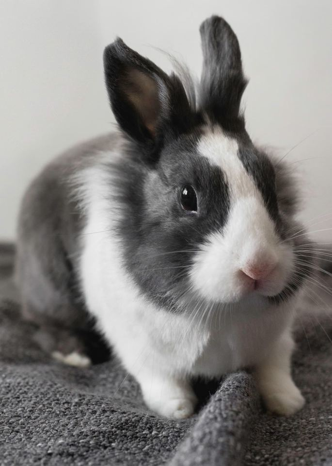
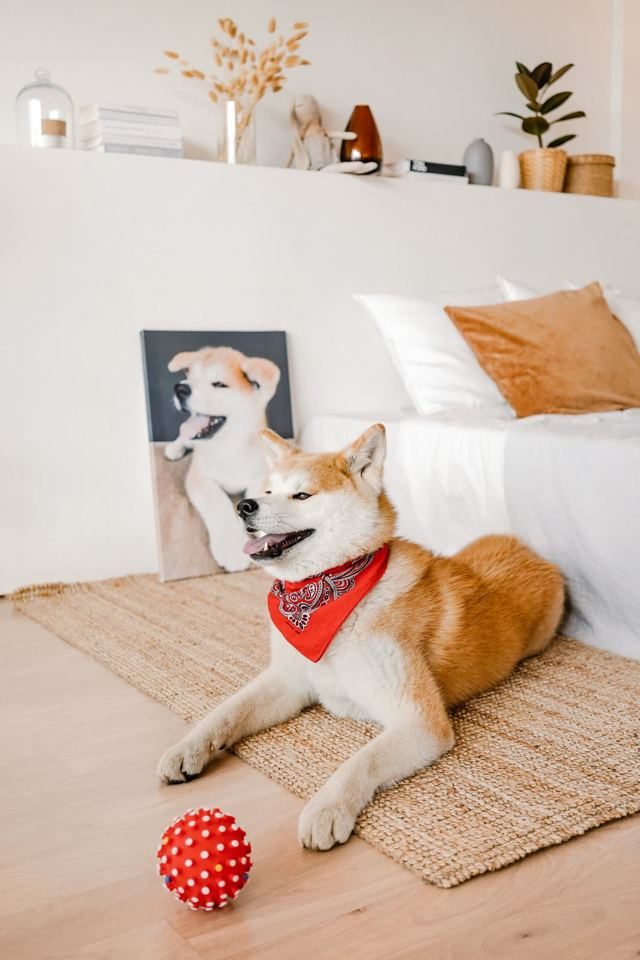

Pet profiles and Pet ID
A profile for every pet, with a shareable digital Pet ID card.
PawConnect for iPhone
Health records, reminders and memories in one place, and a friendly community of people who love their pets as much as you do.
PawConnect is currently offered for people in Singapore.
A message from Jun Man, who made PawConnect. Press play: it starts with sound only when you choose.
Hey everyone! I'm Jun Man, the creator of PawConnect.
I started PawConnect with a simple idea: to make life with our pets easier, smarter, and more connected. PawConnect brings everything together in one place, from managing your pet's health records, vaccinations, vet visits, and milestones, to capturing special moments and connecting with other pet lovers.
We've also got a social feed, Zoomie, PawAI, our AI-powered pet companion, and features to help you discover nearby pet services and products through PawShop.
And the best part? We're just getting started.
My vision is to make PawConnect more than just another pet app, but a place where every pet owner feels connected and supported.
Welcome to PawConnect. Let's make every moment with our pets count!
Meet the creator
“My vision is to make PawConnect more than just another pet app, but a place where every pet owner feels connected and supported.”Jun Man, creator of PawConnect
Everything you would otherwise keep in a drawer, a chat history and your memory, together and easy to find at the vet.
A profile for every pet, with a shareable digital Pet ID card.
Vaccinations, vet visits, weight and medication, with notes and attachments.
Nudges for medicine, vaccines and appointments, so the little things are not forgotten.
Keep your own documents and paperwork next to the records they belong with.
Birthdays, firsts and every walk, with distance, time and route, in one timeline.
Invite a partner, a sitter or a friend, and choose what each person can do.
If a pet goes missing, a finder can scan the tag and contact you without installing anything. You choose what the page shows.
PawConnect helps you keep records and remember things. It does not give veterinary advice, and reminders can arrive late or not at all, so keep your vet's instructions close.
Share the everyday, meet other pet lovers, and keep the memories.
Photos, videos and stories. Give a post a paw or a reaction, comment, and follow pets you love.
Short pet videos for the moments that will not sit still.
Message other pet people, one to one or in groups of up to 200.


An AI pet companion that knows the pets you choose. Ask about food, behaviour or routines, add a photo for context, and pick a past conversation back up.
Choose the pet you are asking about, so the answer starts from their records.
Show PawAI a photo or a vet document and ask about it.
It remembers useful details only if you turn that on, and you can edit or delete them.
PawAI is an AI assistant, powered by OpenAI. Its answers are general information, can be wrong, and are not veterinary advice: if you are worried about your pet, contact a vet. You are asked to agree before you use PawAI for the first time, and you can withdraw in Settings. How your questions are handled.
Vets, emergency vets, groomers, parks, shelters and pet-friendly places on a map. These are search results from Google Maps and Apple Maps, not recommendations: call ahead, and in an emergency call the clinic directly.
A shop window of pet products from other retailers. “Buy” opens the retailer's own website, where you order and pay. PawConnect may earn a commission, and the app always says so.
PawConnect is new, and it grows with the people who use it. Tell us what would make life with your pet easier at support@pawconnectsocial.com.
They need the demo account from batch C7 (N-08) and the owner's choice of which screens to show. Delete this whole section before the site goes live.
No. Pet profiles support dogs, cats, small mammals, birds, reptiles, fish and more. (The calorie guide is for dogs and cats only.)
No. PawAI gives general information, can make mistakes, and cannot diagnose your pet. Contact a vet about anything that worries you, and check anything PawAI suggests before you save it.
A pet's name, photo, species, breed and bio are on its public profile. Health records, documents and private details such as the microchip number are visible only to you and the people you share the pet with. You choose what a recovery tag page shows. The Privacy Policy has the details.
A QR code for your pet's collar. Anyone who scans it sees a page with only what you chose to show, can call or text you, and can send you a message, without installing anything.
No. PawShop is a shop window: the Buy button opens the retailer's own website. PawConnect may earn a commission.
It is currently offered for people in Singapore.
Visit our support page or report a problem.
Let's make every moment with our pets count.
Download on the App StorePawConnect is an iPhone app.